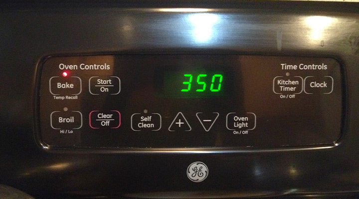
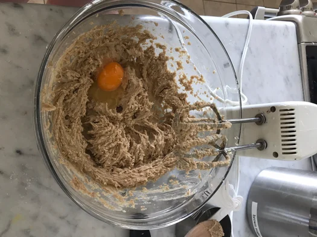
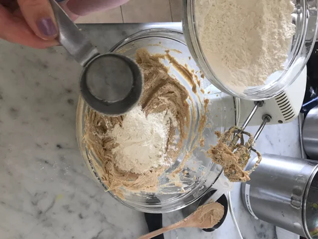
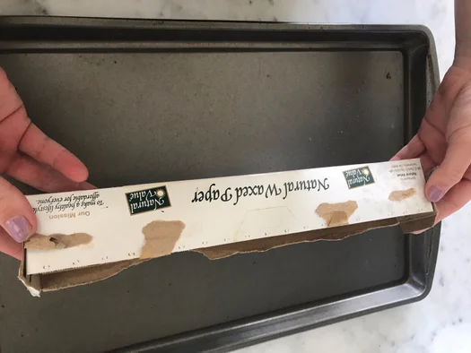
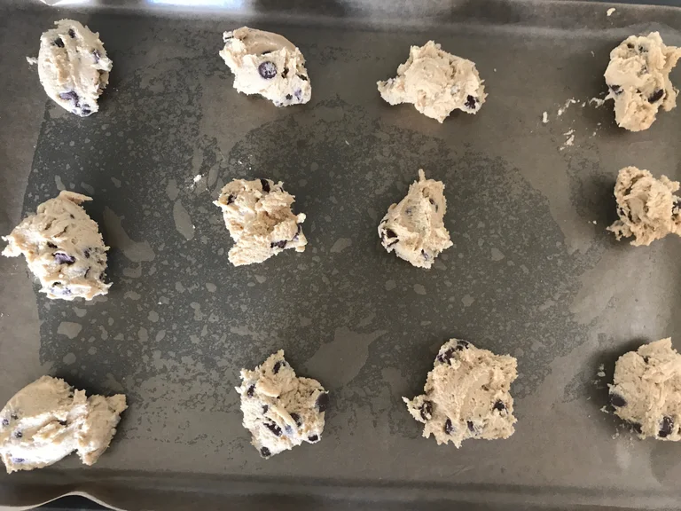
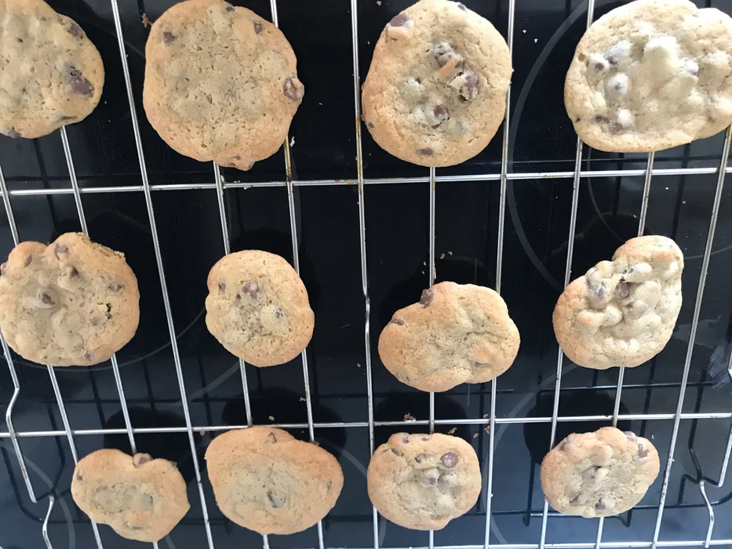

Chocolate Chip Cookies
Tools needed
- 1 small mixing bowl
- 1 wisk
- 1 mixer
- Baking Sheet
- Wax or parchment paper
- 1 large mixinyg bowl
Ingredients needed
- 2 ¼ cups all purpose flour
- 1 teaspoon baking soda
- 1 teaspoon baking soda
- 1 teaspoon salt
- 1 cup (2 sticks) of softened butter
- ¾ cups granulated sugar
- ¾ cups brown sugar (packed)
- 1 teaspoon vanilla extract
- 2 large eggs
- 2 cups chocolate chips (either milk, dark, or semi-sweet)
Instructions starts
- Preheat your oven to 350 degrees fahrenheit.

-
In your smaller mixing bowl, combine your flour, baking soda, and salt.
Mix it and put it to the side.

- In your larger mixing bowl, mix together the granulated sugar and your softened butter until
it is creamy. Then, once your mixture is light and creamy, add in your brown sugar and vanilla. Beat it until its all combined.

-
Add in the eggs one at a time to the mixture after it is all incorporated.
Stir mixture after each egg addition. Beat this mixture until it is creamy.

- Gradually beat in the flour mixture by 1/4 cup to the wet ingredients mixture. Every time you add a section
of the flour mixture make sure you beat it fully into the butter mixture. Repeat this until all of your flour mixture is fully incorporated.

- Stir in the chocolate chips to your cookie dough.

-
Once your dough is all mixed together, grab your baking sheet and place it on a baking pan.

-
Put the cookie dough onto the cookie sheet by the tablespoon or 1/4 cup. Make sure they are spread out evenly so that they don't merge together while baking.

- Cook the cookies for 9 to 11 minutes, or until golden brown. When the cookies are done take them out of the oven,
off the tray and transfer them to the wire rack. Start your next batch with the leftover dough.

And your done!